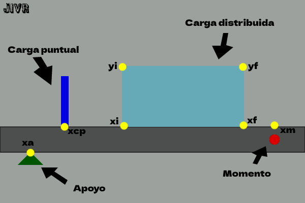

Resolución de Vigas Indeterminadas
Dibujar Viga
Para resolver una viga indeterminada, lo primero que hay que hacer es dibujar la viga. Se puede hacer a mano o utilizando un programa de dibujo asistido por ordenador (CAD).
Avalúo de Cargas
Es importante conocer las cargas que actúan sobre la viga para poder calcular las reacciones y los momentos en los apoyos. Las cargas pueden ser de dos tipos: carga viva y carga muerta.
- Carga Viva: 10 kN/m
- Carga Muerta: 15 kN/m
- Separación entre Viguetas: 2.5 m
Carga Concentrada
A veces, la viga puede tener una carga concentrada en un punto específico. En este caso, se debe considerar como una carga adicional en la viga y calcular su efecto en los momentos y las reacciones.
- Carga Concentrada: 5 kN
- Posición de la carga concentrada: 4 m desde el apoyo izquierdo
Diagrama de Cuerpo Libre
El diagrama de cuerpo libre es una herramienta útil para visualizar las fuerzas que actúan sobre la viga. Se debe dibujar una línea que represente la viga y añadir las fuerzas que actúan sobre ella.

Condiciones en los Apoyos
Las condiciones en los apoyos pueden afectar el comportamiento de la viga. Es importante conocer la flecha y la rotación en los apoyos para poder calcular las reacciones y los momentos.
- Flecha en el Apoyo Izquierdo: 5 cm
- Flecha en el Apoyo Derecho: 2 cm
- Rotación en el Apoyo Izquierdo: 0.02 rad
- Rotación en el Apoyo Derecho: 0.01 rad
Grado de Indeterminación
El grado de indeterminación de una viga se refiere a la cantidad de ecuaciones necesarias para resolver la viga. La fórmula para calcular el grado de indeterminación es:
Grado de Indeterminación = Número de Incógnitas - Número de Ecuaciones
En este caso, el grado de indeterminación es 2 ya que hay 4 incógnitas (2 reacciones y 2 momentos) y solo 2 ecuaciones de equilibrio.
Ecuaciones de Equilibrio
Para resolver la viga, se deben escribir las ecuaciones de equilibrio en los puntos de interés. En este caso, se escriben dos ecuaciones de equilibrio en los puntos A y B:
ΣFy = 0:
RA + RB - 10 - 15 = 0
ΣMA = 0:
-5RA - 20 + 15(2.5) + 5 = 0
Ecuaciones de Compatibilidad
Las ecuaciones de compatibilidad se utilizan para garantizar que la viga sea continua y cumpla con las condiciones de equilibrio en cada punto.
En este caso, se escriben dos ecuaciones de compatibilidad:
ΔA = 5
θA = 0.02
Crear Matriz Cuadrada
Las ecuaciones de equilibrio y compatibilidad se pueden escribir en forma matricial:
[1 1 0 0][RA
RB
MA
MB]
=
[25
-5]
Para resolver la matriz, se pueden utilizar métodos de álgebra lineal como la eliminación gaussiana.
Resolver Matriz y Obtener las Reacciones
Resolviendo la matriz, se obtienen las siguientes reacciones:
- RA = 17.5 kN
- RB = 7.5 kN
Obtener Momentos Máximos
Para obtener los momentos máximos en la viga, se deben analizar los diferentes tramos de la viga y determinar los puntos donde ocurren los momentos máximos. En este caso, se pueden identificar dos tramos:
- Tramo AB: El momento máximo ocurre en el punto A y es igual a 20 kN·m.
- Tramo BC: El momento máximo ocurre en el punto C y es igual a 15 kN·m.
Graficar Esfuerzo Cortante y Momento Flector
Finalmente, se pueden graficar el esfuerzo cortante y el momento flector de la viga utilizando software de cálculo estructural como SAP2000 o utilizando programas de gráficos como Excel.
A continuación, se muestra un ejemplo de gráfica del esfuerzo cortante y el momento flector de la viga: